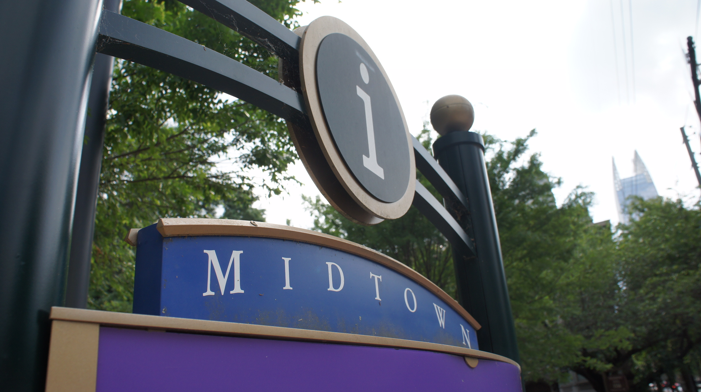

Midtown has fast become the cultural center of Atlanta, hosting much of Atlanta's thriving arts scene, many of its renowned museums, restaurants and shhops. But the undeniable heart of Midtown is Piedmont Park. The park, which serves as one of Atlanta's largest parks and a center for outdoor activity in the city. Piedmont Park and Midtown have been host to numerous conventions, festivals and parades, and have earned a reputation as the bustling core of this rapidly-expanding city. Part of what make this area of Atlanta so vibrant and successful is its abundance of greenspaces; from the gardens and arboretums of Piedmont Park to the tree-lined streets of Midtown, Midtown is filled with parks and greenspaces, making for a truly beneficial urban experience.
To find out more about the Midtown/Piedmont Park and how you can volunteer to greenify Midtown parks and greenspaces, check out PiedmontPark.org or PiedmontPark.org.